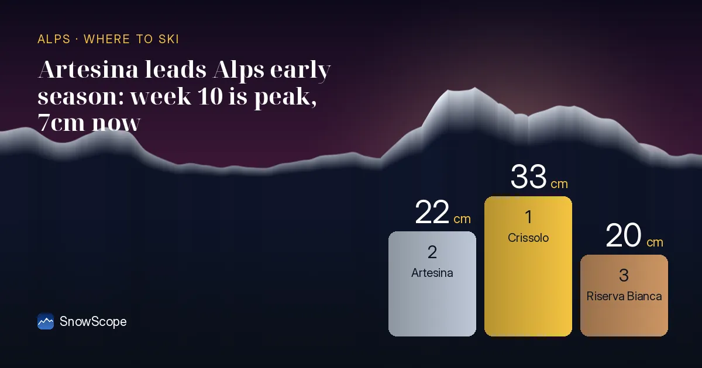
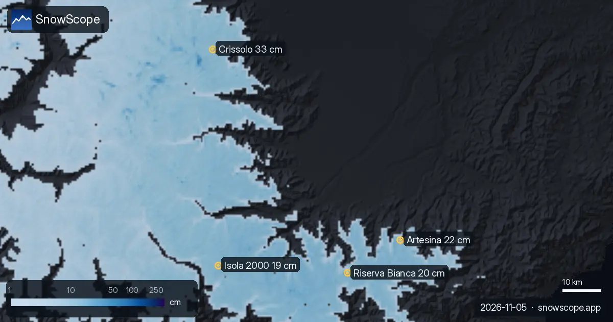
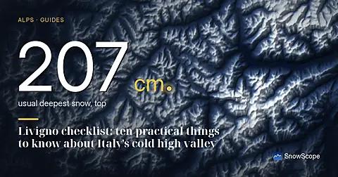

Artesina leads Alps early season: week 10 is peak, 7cm now
Artesina in Italy stands ahead of its peers with 22 cm on upper slopes as of Thursday. The satellite data shows snow across 46,450 km² of the Alps, but the season is young: historically, weeks 10, 9 and 11 bring the best skiing here.
See the live snow forecast for Artesina in the SnowScope appSnow depth, powder alerts and the 3D map, free.
Why Artesina now, and when to return
Artesina has accumulated 55 cm over the past three days, more than most rivals in this survey. Its upper slopes at 2,091 m hold 22 cm today, compared to 19 cm at Isola 2000 and 20 cm at Riserva Bianca. Yet the real insight lies in timing: at this height on Artesina, mid-November through late December (weeks 10, 9 and 11) is when deep snow typically arrives. Right now, in early November, the snowpack is thin everywhere and prone to damage.
The freezing level on Thursday sits between 1,490 m and 1,670 m, meaning snow at Artesina's base (801 m) will not persist. Even at mid-height (1,446 m), the model shows just 2 cm. The upper slopes remain your only reliable terrain.
| Resort | Snow depth | New snow, 72 h | Coming, next days | Top |
|---|---|---|---|---|
| Artesina | 22 cm | 55 cm | 9 cm | 2,091 m |
| Isola 2000 | 19 cm | 58 cm | 7 cm | 2,601 m |
| Riserva Bianca | 20 cm | 52 cm | 9 cm | 2,054 m |
| Crissolo | 33 cm | 42 cm | 6 cm | 2,308 m |

What the last 72 hours tell you
Three days of snow have reshaped the region. The Alps now carry snow across 46,450 km², a jump of 11,060 km² since Monday. Among the four resorts tracked here, fresh snow ranged from 42 cm at Crissolo to 58 cm at Isola 2000. Artesina received 55 cm in that period, with 31 cm arriving on Thursday alone.
Yet fresh snow does not equal skiable depth, especially in autumn. Crissolo sits at a higher base elevation (1,537 m) and benefits from a warmer freezing level today (1,840 to 2,000 m). By Saturday, that level will drop to 1,820 to 2,140 m, allowing more snow to consolidate. Isola 2000, at 1,828 m base and 2,601 m top, sits high enough that its entire terrain stays well above the freezing level through the weekend.

Weekend forecast and slope stability
Friday through Sunday will see marginal new snow. Artesina expects 8 cm on Friday, then just 1 cm on Saturday and nothing on Sunday. Isola 2000 forecasts 7 cm Friday, then 0 cm for the weekend. By Sunday evening, 671 resorts across the Alps will hold snow, down from 785 today. The snow will not deepen much, but cooling freezing levels mean consolidation will improve.
Early-season cover this thin conceals hazards. Rocks, grass and exposed terrain lie just beneath the surface on south-facing slopes and at lower elevations. Stick to marked, groomed runs. If you plan to leave the pistes, consult the official avalanche bulletin first; a thin base can mask instability despite deep fresh snow overhead.
Elevation and aspect: where the snow persists
Artesina's model shows the stark contrast between heights. At 801 m base, the depth model reads 0 cm today and forecasts 0 cm new snow over the next week. At 1,446 m, you have 2 cm now, with 4 cm forecast to arrive. At the summit (2,091 m), 16 cm sits underfoot, rising to 36 cm by next Friday. That vertical range is crucial: ascend to ski, descend to ride lifts.
North-facing and shaded slopes retain snow longer than south-facing terrain, particularly in November when the sun is low but persistent. Groomed runs at the highest elevations offer the safest, most reliable skiing this weekend.
Peers and alternatives
Isola 2000 ranks second in this survey with 19 cm on upper slopes and a base at 1,828 m. At its mid-height (2,214 m), 14 cm sits underfoot, deeper than 43 of the past 46 winters on this date. That mid-zone snow is rare for early November and worth noting. Riserva Bianca and Crissolo follow, each with similar thin bases but reasonable upper-slope reserves.
Check resort websites for lift openings before you travel. Snow on the map does not guarantee open terrain.
Looking ahead
This weekend marks the edge of the season. The real skiing arrives in weeks 10, 9 and 11—late December into early January. If you are considering a mountain day this weekend, treat it as reconnaissance. Test conditions, scout terrain and acclimatise. Plan your main holiday for the deep-snow weeks ahead.
Tips for skiers
- Drive to Artesina's upper slopes or the high terrain at Isola 2000. The base and mid elevations hold too little snow to ski safely this weekend.
- Avoid south-facing slopes. North-facing runs and shaded terrain hold the snow longest when the layer is this thin.
- Stay on groomed, marked pistes. Rocks hide under 20 cm of early snow; venture off-piste only after reading the official avalanche bulletin.
- Verify lift access on the resort website before you depart. Early November is opening day for some areas, closures for others.
- If conditions feel marginal, return in week 10. That is historically when Artesina and the region transition to reliable skiing.
About these numbers
Resort snow depths are the deepest snow on the resort's upper slopes from the SnowScope snow model (about 1 km, run of 5 November); they are estimates for an area, not a measurement at one point. Station values are measurements on the date shown. Forecasts can change. Always read the official avalanche bulletin before going off-piste.
Official avalanche bulletins: EAWS (Alps)
Cite this report
For research, teaching or the press: the numbers and charts are free to reuse under CC BY 4.0 with this citation.
SnowScope (2026), Artesina leads Alps early season: week 10 is peak, 7cm now, https://snowscope.app/blog/en/2026/11/alps-where-to-ski-this-weekend-5-november-2026.html, accessed 2026-11-05
SnowScope (Atlas Labs). (2026, November 5). Artesina leads Alps early season: week 10 is peak, 7cm now. SnowScope snow reports. https://snowscope.app/blog/en/2026/11/alps-where-to-ski-this-weekend-5-november-2026.html
BibTeX
@misc{snowscope2026alpswheretoskithisweeken,
author = {{SnowScope (Atlas Labs)}},
title = {Artesina leads Alps early season: week 10 is peak, 7cm now},
year = {2026},
month = nov,
howpublished = {\url{https://snowscope.app/blog/en/2026/11/alps-where-to-ski-this-weekend-5-november-2026.html}},
note = {Published 2026-11-05 10:27 UTC; accessed 2026-11-05}
}· CC BY 4.0 · Methods, data and tools →
Artesina: snow and temperature by height, this winter vs last (tools) →
Follow Artesina
Free: a message when fresh snow is coming, and the forecast every morning.
More snow reports

Chantarella, Marguns, Piz Nair, White Turf: the words you hear in St. Moritz, explained, and what 46 past winters of our snow history say about each height of Corviglia.

Obertauern December skiing: 43 cm on a typical 15 December at mid-mountain, and a 6-day pass of EUR 331 before Christmas. Snow history and prices.

Ten practical points for a ski trip to Livigno: the roads in, the cold, the duty-free shops, the two ski sides and when the snow is best, from 46 past winters of our snow history.